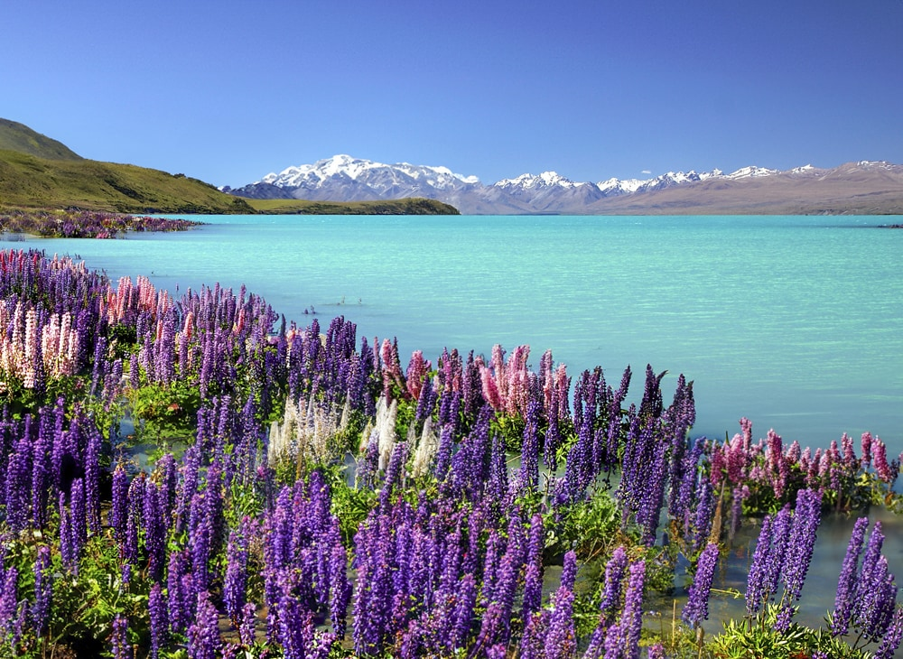
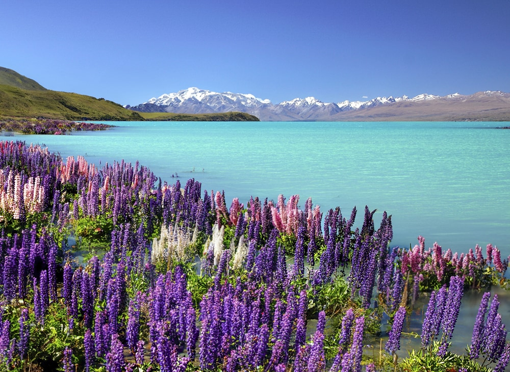
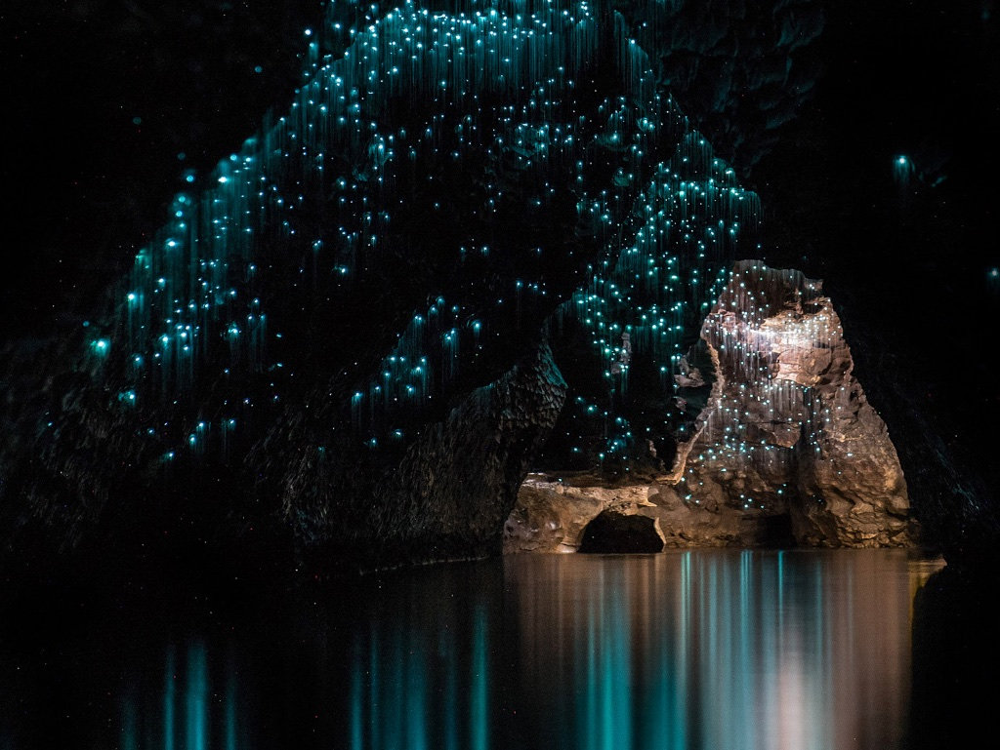
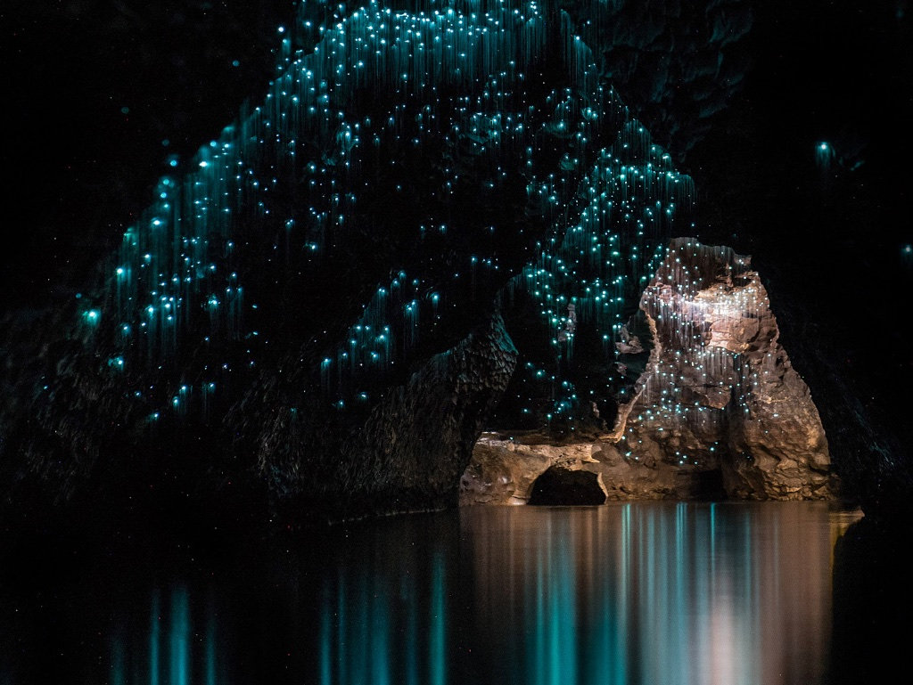

Descubra as Belezas Naturais da Nova Zelândia
Descubra as Belezas Naturais da Nova Zelândia Mergulhe em um mundo de paisagens deslumbrantes, onde as montanhas majestosas se erguem imponentes, e os lagos cristalinos refletem a beleza ao redor. A Nova Zelândia é um verdadeiro paraíso para os amantes da natureza, oferecendo uma diversidade impressionante de cenários. À direita, você pode ver a icônica paisagem de Milford Sound, um dos destinos mais deslumbrantes do país. Com suas impressionantes montanhas cobertas de vegetação exuberante e cascatas que despencam em águas tranquilas, Milford Sound é um testemunho da beleza natural da Nova Zelândia. Este fiorde, cercado por picos majestosos, convida você a explorar suas trilhas e experimentar momentos inesquecíveis em meio à natureza selvagem. Explore florestas encantadoras que abrigam uma rica fauna e flora, sinta a brisa fresca dos lagos e descubra os segredos que cada canto dessa terra mágica tem a oferecer. Prepare-se para uma jornada que vai além da vista — uma verdadeira conexão com a essência do mundo natural.
 

 
